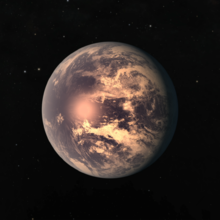
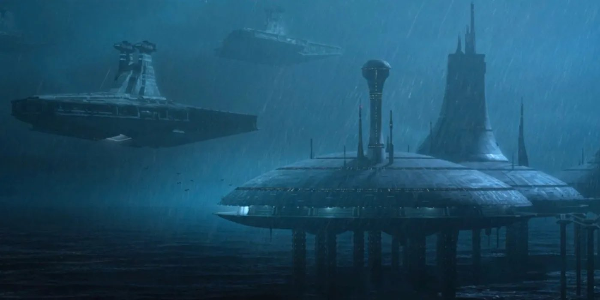
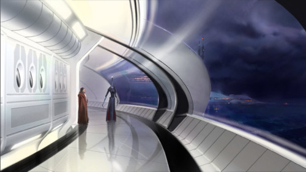
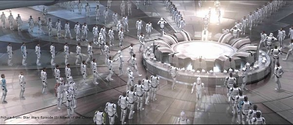

Kamino est une planète océanique isolée dans la Bordure Extérieure. Connue pour ses tempêtes incessantes et ses océans sans fin, elle est habitée par les Kaminoans, un peuple d'extraterrestres experts en clonage. C'est sur Kamino que l'armée des clones de la République a été secrètement créée, marquant un tournant crucial dans les Guerres des Clones.
|  |  |  |  |